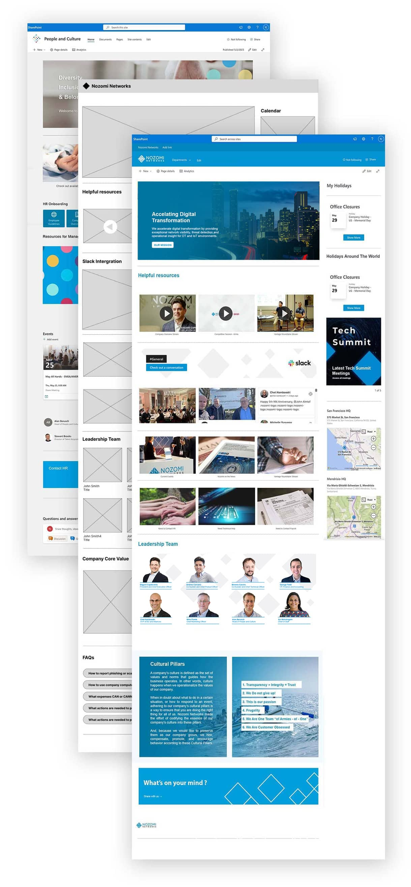

Sharepoint web design for Nozomi Networks
My role was to redesign and rebuild company internal websites. Working directly with HR leadership, I collected ideas and requirements
to create designs and implement them in SharePoint.
The goal of the project was to create Sharepoint sites
that contain useful company information and internal resources for employees. The web design must align with company brand guidelines
and be easy to navigate and maintain.
The sites received excited and positive feedback once completed with traffic drastically increasing. Many other department leadership was also interested and driven in using Sharepoint as their information channel.
Tools: Figma and Photoshop
